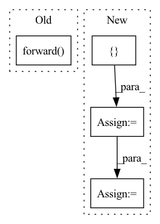

Pattern ID :13023

Before Change
:return:
batch_size, N, _ = tar_candidate.size()
tar_pred_prob, dx, dy, top_m_indices = self.forward(feat_in, tar_candidate)
// select the M output and gt
index_offset = torch.arange(0, batch_size, device=self.device).view(batch_size, -1).repeat(1, self.M).view(-1)
top_m_indices = top_m_indices.view(-1) + index_offset * N
After Change
m_candidate_loss = F.binary_cross_entropy(tar_pred_prob_selected, candidate_gt_selected, reduction=reduction)
// pred offset and compute regression loss
feat_in_reg = torch.cat([feat_in, tar_candidate[candidate_gt.bool()]], dim=1) // [batch_size, feat_dim + 2]
tar_offset_mean = self.mean_mlp(feat_in_reg) // [batch_size, 2]
offset_loss = F.smooth_l1_loss(tar_offset_mean,
offset_gt,
reduction=reduction)
return n_candidate_loss + m_candidate_loss + offset_loss
In pattern: SUPERPATTERN
Frequency: 4
Non-data size: 4
Instances
Fragment ID: 44026078
Project Name: henry1iu/tnt-trajectory-prediction
Commit Name: f39d0655e9e763f4dd61411259fdd4d214f6f34d
Time: 2021-04-09
Author: liu.jb.henry@gmail.com
File Name: core/model/layers/target_prediction.py
M Class Name: TargetPred
N Class Name: TargetPred
M Method Name: loss(6)
N Method Name: loss(6)
M Parent Class: nn.Module
N Parent Class: nn.Module
M File Name: core/model/layers/target_prediction.py
N File Name: core/model/layers/target_prediction.py
M Start Line: 92
M End Line: 107
N Start Line: 93
N End Line: 112
'>
Before Change
def predict(self, interaction):
user = interaction[self.USER_ID]
item = interaction[self.ITEM_ID]
return self.forward(user, item)
After Change
user = interaction[self.USER_ID]
user_ids = user.unique()
user_iters, item_nums = self.get_input(user_ids)
scores = []
for user_input, item_num in zip(user_iters, item_nums.squeeze(1)):
if self.split_to <= 0:
output = self.user_forward(user_input, item_num, repeats=self.n_items)
else:
output = []
for mask in self.group:
tmp_output = self.user_forward(user_input, item_num, repeats=len(mask), pred_slc=mask)
output.append(tmp_output)
output = torch.cat(output, dim=0)
scores.append(output)
result = torch.cat(scores, dim=0)
return result
'>
Fragment ID: 44026094
Project Name: rucaibox/recbole
Commit Name: 98a9cc5f81ea2e9c8bf65c681610136fbd7d2e73
Time: 2020-09-03
Author: 1337990880@qq.com
File Name: recbox/model/general_recommender/nais.py
M Class Name: NAIS
N Class Name: NAIS
M Method Name: predict(2)
N Method Name: predict(2)
M Parent Class: GeneralRecommender
N Parent Class: GeneralRecommender
M File Name: recbox/model/general_recommender/nais.py
N File Name: recbox/model/general_recommender/nais.py
M Start Line: 135
M End Line: 137
N Start Line: 172
N End Line: 187
'>
Before Change
model_dir=modeldir,
text_field=preprocessor.text_field,
config=preprocessor.config)
print(model.forward(None))
// pipeline = DialogGenerationPipeline(
// model=model, preprocessor=preprocessor)
After Change
model_dir=cache_path,
text_field=preprocessor.text_field,
config=preprocessor.config)
pipelines = [
DialogGenerationPipeline(model=model, preprocessor=preprocessor),
pipeline(
task=Tasks.dialog_generation,
model=model,
preprocessor=preprocessor)
]
result = {}
for step, item in enumerate(self.test_case["sng0073"]["log"]):
user = item["user"]
print("user: {}".format(user))
result = pipelines[step % 2]({
"user_input": user,
"history": result
})
'>
Fragment ID: 44026104
Project Name: modelscope/modelscope
Commit Name: 3c687c9f3773f6420e486324cdbae2104e518b20
Time: 2022-06-15
Author: ly119399@alibaba-inc.com
File Name: tests/pipelines/nlp/test_dialog_generation.py
M Class Name: DialogGenerationTest
N Class Name: DialogGenerationTest
M Method Name: test_run(1)
N Method Name: test_run(1)
M Parent Class: unittest.TestCase
N Parent Class: unittest.TestCase
M File Name: tests/pipelines/nlp/test_dialog_generation.py
N File Name: tests/pipelines/nlp/test_dialog_generation.py
M Start Line: 99
M End Line: 117
N Start Line: 106
N End Line: 125